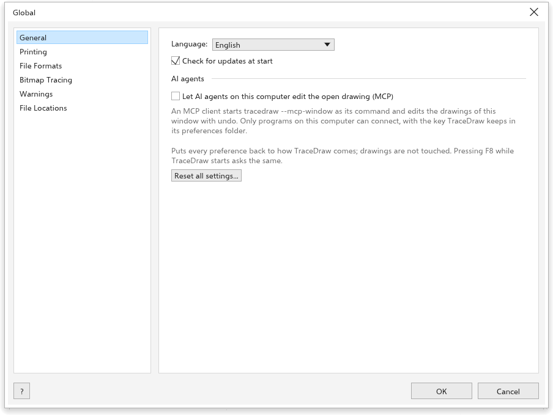
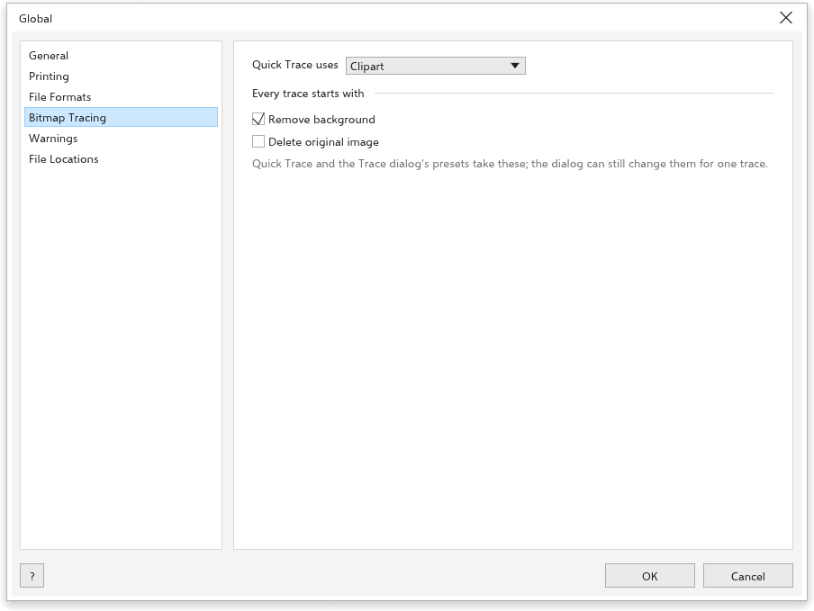

Opciones globales
Herramientas > Opciones > Global contiene los ajustes que se aplican a todo el programa: idioma, valores predeterminados de impresión y exportación, calco, mensajes y dónde se guardan los archivos.
General

- Idioma: el idioma de la interfaz. Esta Ayuda se abre en el mismo idioma.
- Buscar actualizaciones al iniciar (activado): vea Buscar actualizaciones.
- Agentes de IA: Permitir que agentes de IA de este equipo editen el dibujo abierto (MCP) permite que los asistentes de IA de este equipo editen el dibujo abierto; vea Scripts.
- Restablecer todos los ajustes: vea Restablecer los ajustes.
Impresión

El cuadro Imprimir empieza con: Ajustar a la página, Imprimir separaciones (C, M, Y, K), Sangrado, Marcas de corte, Marcas de registro, Barras de color, Escala densitométrica, Información de página (todos desactivados), la Hoja, Horizontal y el Espacio entre páginas (5 mm). Recordar la configuración de la última impresión conserva las opciones de la última impresión. En Comprobaciones, Comprobar el dibujo en el cuadro Imprimir (preflight) (activado). Vea Imprimir un dibujo.
Formatos de archivo

- Archivo > Exportar empieza con: el Formato (SVG), la Resolución de los formatos de mapa de bits (300 ppp), la Calidad de JPEG y WebP (90), Fondo transparente (activado), el Compatibilidad, la Condición de salida y el Sangrado. Recordar la configuración de la última exportación conserva las opciones de la última exportación.
- Importar: Los objetos importados van Donde los tiene el archivo (opción predeterminada) o Centrados en la vista.
- Guardar archivos .cdr: la Versión en la que se guardan como
.cdrlos dibujos nuevos.
Calco de mapas de bits

El Calco rápido usa uno de los ajustes preestablecidos (Imágenes prediseñadas de forma predeterminada). Todo calco empieza con Quitar fondo (activado) y Eliminar imagen original (desactivado). Vea Calcar mapas de bits.
Avisos

Mostrar un mensaje Cuando no se puedan leer objetos de un archivo abierto, Cuando un dibujo abierto use fuentes que no están instaladas y Antes de quitar un elemento del estante (todos activados). Cada mensaje tiene además una casilla que lo desactiva; marque aquí la opción para volver a verlo.
Ubicaciones de archivos

Muestra dónde se guardan las preferencias y las copias de seguridad automáticas. Las preferencias están en una carpeta tracedraw-settings junto al programa cuando existe (una copia portátil); si no, en el lugar que su sistema destina a los ajustes de los programas. La versión para navegador las guarda en el navegador.